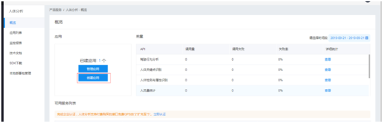

本示例是采用Delphi 7 调用百度人体分析API；首先说明一下，怎么创建测试应用。
1、 登录百度云官网 https://cloud.baidu.com/ 当然需要一个百度账号
2、 进入管理控制台，然后选择产品服务-人工智能-人体分析
3、 创建应用即可获取，相应API Key 信息/

4、 人流量统计：对应API地址 https://cloud.baidu.com/doc/BODY/s/Pjwvxzafo
返回数量和已经渲染的过的图片(非必选)。不知道，有没有17个人。
获取图片类型时有个小插曲；内存流两个字节是图片类型，一般定义为word，但我直接写了个dword，大家可以自己查一下，有什么区别；
在我正常加载图片的时候，好像没有区别，jpg图片确实是D8FF。但是当在调用人流量统计API返回的渲染图时会多出两位来，出现过18D8FF，4ED8FF。
最后Dword改为Word就可以了。大家可以测试一下/
procedure TFrmMain.cxButton2Click(Sender: TObject);
var
memImg: TMemoryStream;
strImg: TStringStream;
sUrl: string;
lstParam: TStrings;
ret: ISuperObject;
buff: dWORD;
begin
memImg := TMemoryStream.Create;
strImg := TStringStream.Create('');
lstParam := TStringList.Create;
try
if Image2.Picture.Graphic = nil then
begin
ShowMessage('图片为空, 请下加载图片');
Exit;
end;
Image2.Picture.Graphic.SaveToStream(memImg);
memImg.Position := 0;
memImg.ReadBuffer(buff, 2);
memImg.Position := 0;
EncdDecd.EncodeStream(memImg, strImg);
lstParam.Add(Format('image=%S', [strImg.DataString]));
lstParam.Add(Format('show=true', []));
sUrl := Format(sUrl_TrafficStat, [FToken]);
ret := SO(UTF8Decode(IdHTTP1.Post(sUrl, lstParam)));
cxMemo1.Text := ret.AsString;
Image2.Picture.Bitmap.Assign(StringToBitmap(ret.S['image']));
finally
memImg.Free;
strImg.Free;
lstParam.Free;
end;
end;
5、 手势识别：对应API地址 https://cloud.baidu.com/doc/BODY/s/tjwvxz8jp
单手比心/
其它的大家摸索一下。人体关键点识别，人体属性识别。感觉不是很准，有时候传回的数据也有问题（json串）
不知道是不是图片的问题。